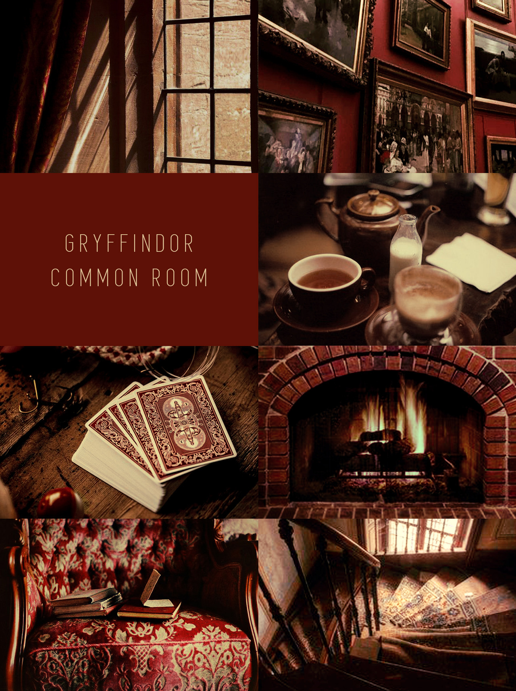

Gryffindor is known as the house that values bravery and strong moral character. Students placed in this house are often bold, determined, and willing to stand up for what they believe is right. They are not afraid to take risks, especially when protecting their friends or fighting injustice.
The house was founded by Godric Gryffindor, one of the four original founders of Hogwarts. Its symbol is a lion, representing strength and courage. Gryffindor students are often remembered for their leadership, loyalty, and passion. The common room, located in a tall tower, provides a cozy and inspiring space for students to gather and support one another.